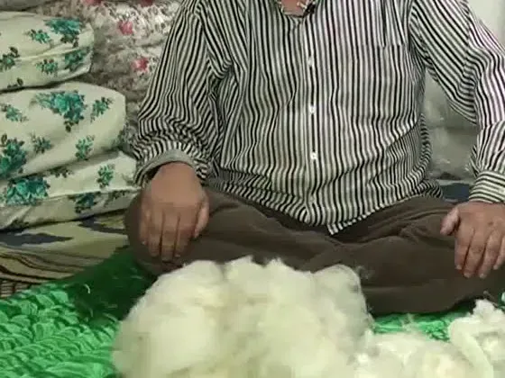
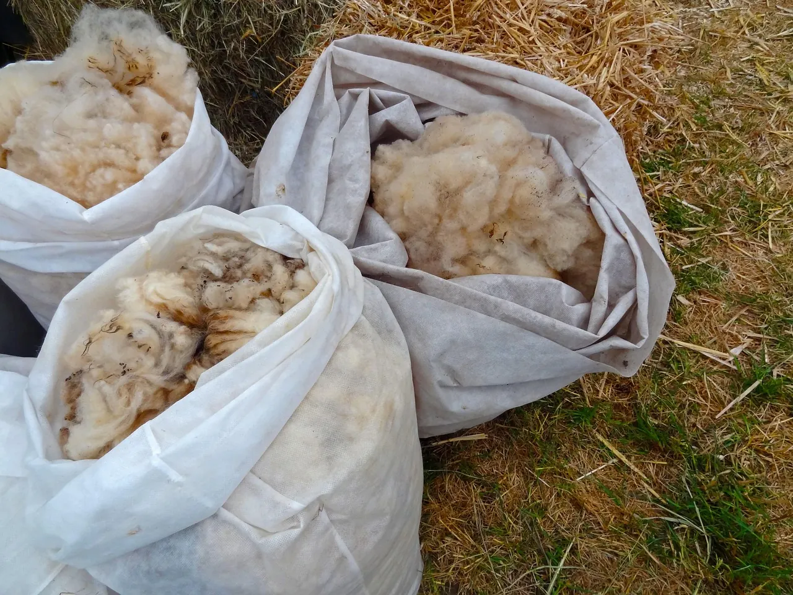

Ana sayfa / Tamir & yenileme
Basıklaşan yün yeniden nefes alır.
Yün yorgan, yün döşek ve yastık yıllar içinde sıkışır, topaklanır. Dükkânda yün açılır, kabartılır, eksiği tamamlanır ve yeni yüzle yeniden dikilir. Anneden kalan yorgan da, çeyizden kalan döşek de yeniden yumuşar.

Yenileme ve kabartma
Yazan ücretler başlangıçtır; yorganınızı görünce (fotoğraf da olur) kesin ücreti usta söyler.
Yenileme adım adım
Bakış
Yünün durumu ve yorganın ağırlığı değerlendirilir.
Sökme ve açma
Eski yüz sökülür, sıkışan yün açılır, topaklar dağıtılır.
Kabartma ve tamamlama
Yün kabartılır; eksilen kısım varsa eklenir.
Serme ve dikiş
Yün eşit kalınlıkta serilir, yeni yüz geçirilir, desen dikişi atılır.
Teslim
Dükkândan alın ya da adet fazlaysa evinize getirelim.

Yenileme zamanı geldi mi?
- Yorgan ağırlaştı ama daha az ısıtıyor
- Bazı yerler ince, bazı yerler topak
- Katlayınca eski kabarıklığına dönmüyor
- Yüz kumaşı yıprandı, dikişler açıldı
Sık sorulanlar
Yün yorgan kaç yılda bir yenilenmeli?
Kullanıma göre değişir; ustaların genel önerisi düzenli kullanılan yün yorganın 3–5 yılda bir kabarttırılmasıdır.
Evden alıyor musunuz?
Döşek ve yastık adedi fazlaysa Korkuteli'de adresinizden alınıp kabartılır, dikilir ve geri getirilir. Koşulları telefonda konuşun.
Eksilen yün ne olur?
Yıllar içinde eksilen yün tamamlanır; eklenen yün ayrıca ücretlendirilir ve önceden söylenir.
Silikon yorgan tamir edilir mi?
Yırtık yüz dikilebilir, ama sentetik dolgu yün gibi kabartılıp yenilenemez; genellikle değiştirmek daha doğrudur.